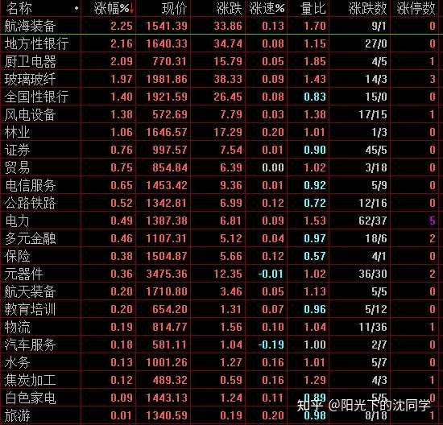
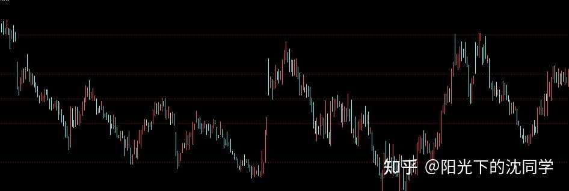
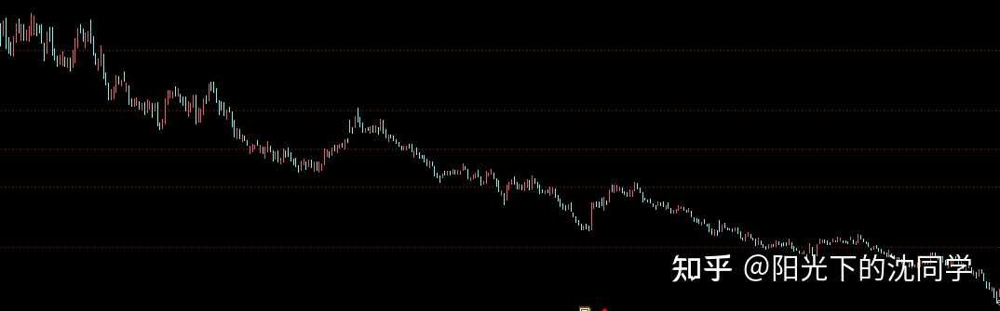
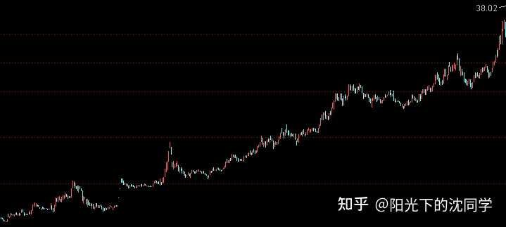
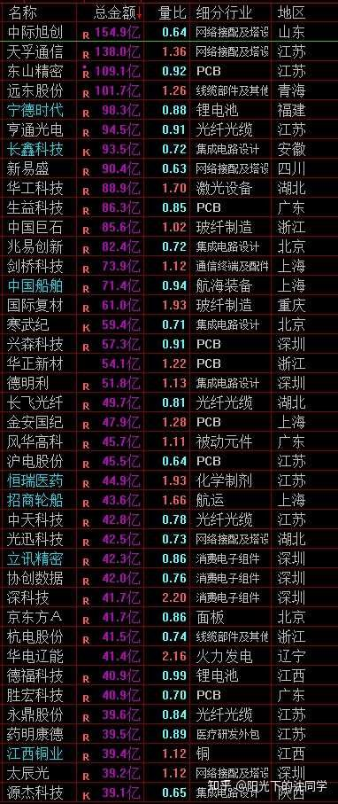
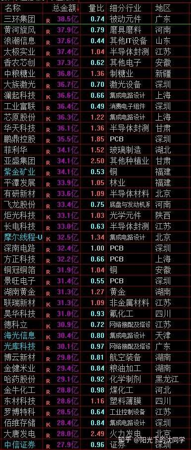
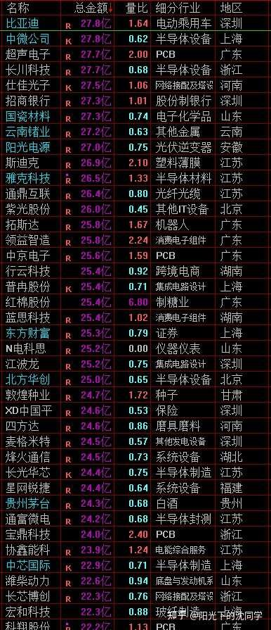

作者的核心逻辑是基于‘风险释放’的逆向思维：在弱势震荡行情中，指数的阴跌并非坏事，而是清理浮筹、释放估值压力的必要过程。作者认为，当前市场缺乏增量资金，大资金因美联储加息预期而观望，导致市场处于‘钝刀割肉’的阴跌状态。只有通过指数级别的杀跌（如3950-3650区间），才能让风险一次性出清，从而为低位优质资产提供高胜率的抄底空间。其本质是‘以时间换空间’的防御性策略，强调在趋势不明朗时，现金为王，通过避险资产（债券）保值，等待市场情绪极度悲观时的‘黄金坑’。
现在这种弱势行情，个股一直走弱阴跌，没什么交易机会，还不如指数也跌一波，跌透一点，反而会有买点
这段时间指数时不时的拉升拉升，但成交量越来越小，赚钱效应越来越差，除了把握3950以上机会减仓，很难有再多的交易
真的到3950-3650区间杀跌几波，跌下来，风险释放快，不管未来是不是真的美联储加息，都不需要那么害怕
不跌才是目前最麻烦的事情，跌了什么利空都不是事，提前释放风险，到时候来什么利空都是靴子落地注【本质逻辑】指市场长期担忧的负面预期（如加息）终于发生，不确定性消除，市场反而会因为‘利空出尽’而反弹。【新手提示】市场最怕的是不确定性，一旦靴子落地，往往是情绪反转的节点。
因为现在基本上都预期美联储要加息，大资金也不怎么出来活动，资金面真的很差，个股是已经阴跌很长一段时间了
就是指数还差一个杀跌动作，我认为很多低位科技，白马蓝筹，红利什么的就能有加仓机会
通过这段时间复盘和筛选自选股来看，是可以挖掘到不少好东西在低位徘徊的
这种时候再叠加一波指数3950-3650的杀跌，胜率会很高，我们需要耐心等待这个机会再加仓
平时指数没有什么杀跌就尽可能减少交易，多留现金，不要总觉得现金烫手，拿不住钱，总觉得拿着钱怕踏空
拿着钱怎么可能踏空？
有大行情，只要逻辑够硬，最多少赚一个启动的钱，你想跟上，后面都是可以跟上的，没什么逻辑的高开，拉升，就算是看起来好像可以接近4000点，最终还是很可能快速跌回3950以下，这种有什么好参与的
有时候其实就是心魔，巴不得自己可以买到最低点，然后享受一波大行情，有一些这种执念导致交易起来蹑手蹑脚，没办法很好的控制仓位
最低点，最高点都不重要，因为情况不对早一点卖出，没办法都卖在最高点是很正常的，同理，行情在还没有启动，没有什么可以做的时候，你多观望观望，回过头来看，没有买到最低点也正常
只要中间的鱼肚子，比较好赚，比较美味的收益，你赚到了就好
我认为这种半死不活行情是真的不太好做，我个人没有能力在这样的行情里面高胜率赚钱，这是我选择休息休息，暂时不加仓的原因
资金面很弱，全球股市位置很高，在这样的情况下，我自己的盈利模式来看，需要我看好的低位优质企业+指数大跌，才符合高胜率赚钱的标准，我在等待市场出现指数级别的杀跌，各种ETF，好公司其实我都一直筛选的不错了，给了这种机会，我会加仓
或者真的有新的一轮行情，我也会跟上加仓，不然我情愿就维持目前低仓位，闲钱先放债券ETF里面多看看
冒然加仓，这种行情里面满仓，还不如买债券

每天原创不易，读者朋友千万不要忘记点赞支持一下
正所谓先赞后看，腰缠万贯
大家可以先点一波赞，我们再继续慢慢聊
祝点赞的朋友福寿无量，天天开心
聊完了整体的行情和交易思路，我们来继续聊聊怎么判断趋势走势，昨天聊了怎么去筛选股票，今天聊聊趋势，这个很重要，大家可以收藏起来慢慢看，昨天的内容也非常值得收藏
趋势其实就是3种
一种是震荡
就像下面股票走势一样
他是涨涨跌跌的，没有一直新低，也没有持续突破
这种就是震荡
震荡趋势的做法要看短线博弈还是长线投资
短线博弈肯定是每次到震荡高点卖出，跌下来买入
长线投资是跌下来买，涨起来先不动，因为长线投资的关键是这个企业很优秀，很便宜，你主动放弃一些波段收益，未来可以获得更多长期收益

展示了典型的震荡形态。多空双方力量均衡，没有明确方向。新手应观察其波段高低点，切忌在震荡区间中轴追涨杀跌，应采取‘高抛低吸’策略。
关键是你选的股票情况怎么样，是低位低估值的白马蓝筹，红利这种，当然是做长线投资更好
如果是科技类，新兴行业，那做波段更好
震荡走势也要看高低位，高位震荡只能做波段，低位才能考虑是不是拿一拿，震荡走势一般出现在下跌中继注【本质逻辑】在下跌趋势中，市场出现短暂的横盘或微弱反弹，给人一种‘跌不动了’的错觉，实则是主力在整理阵型，准备下一轮杀跌。【新手提示】不要在下跌趋势的横盘期轻易抄底，极易被套在半山腰。和底部区间
就是有时候高位杀跌一波，没有跌干净，会震荡一段时间，后面继续跌，这种就是下跌中继
底部就是已经跌了很多年，开始筑底，震荡，这些也是要考虑进去的
我们再来下跌趋势
下跌趋势就是一直新低，这个很直观
我认为下跌趋势是没有什么交易空间的
因为你没办法确定什么时候见底，感觉任何时候买入都可能不对
下跌趋势最好是观望，等他走到震荡走势了再开始考虑怎么做筹码收集
大部分股票都这样，下跌趋势就是没办法做的

展示了明显的下跌趋势。均线向下发散，反弹无力。这反映了市场信心崩溃，卖盘远大于买盘。新手在此阶段应严格执行‘空仓观望’，不要试图接飞刀。
不一样的是ETF
个股的下跌趋势是很独立的，ETF不是，ETF是综合的，里面有很多股票，尤其是宽基，影响因素更多
ETF下跌趋势是可以通过估值来提前定投的，尤其是黄金，红利，美股这种，他们有时候没有那么多震荡走势
而且本来也是需要细腻定投的资产，你下跌趋势不提前定投，你等震荡或者上涨开启了再定投，就买不到那么多你要的资产了
所以ETF和个股又不一样，个股是不能搞下跌趋势的，ETF里面非常强势稳健的，长期复利好的，在低估值的时候，下跌趋势没有扭转的时候，也是可以定投的，但不能一口气买很多，这种不行
最后的一个走势就是上涨趋势了
就像下面走势一样，很明显，一直新高
上涨走势值得买入+持有
但很多投资者反而不喜欢做上涨走势，因为心魔，总觉得已经上涨趋势开启了，自己没有最低点买到就不做了，这个是非常错误了
大部分个股或者板块，指数，一旦开启上涨趋势，都不是一时半会结束的
你去参与其中，反而胜率高，但凡不是买在估值高点，或者每次快速冲顶拉升的时候，选择回撤去买入，继续上涨概率是最大的
而且时间来看，一波行情最起码是1-3年，1年内的上涨趋势更安全，再结合1-5浪走势的判断，你没有那么容易就买在最高点

展示了上涨趋势。价格不断创新高，回调不破支撑位。这是主力资金锁仓的表现。新手应克服‘恐高症’，在趋势确立后顺势参与，而非等待所谓的最低点。
上涨趋势运行的占比时间有时候就那么30%不到，其他都是震荡+下跌，好不容易人家筹码锁定了，主力洗盘那么多年，熬出来的上涨趋势，你不相信，你不做，你觉得自己买贵了，那是很可惜的
上涨趋势去参与，不等于是追高，这个是两个概念，因为上涨是趋势，不是一天，两天
趋势有逻辑支撑，有业绩支撑，刚刚开启，那就是值得去做的
一些短线热点都可以做几个月，刚刚开启去博弈也是机会，也不是一天就结束
所以不管怎么说，上涨趋势是最好做的，也是最值得珍惜的
当然这里面有一个问题，那就是大部分投资者不怎么复盘，上涨趋势开始的时候，他没有去关注，而是等全网宣传，周围同事都在买了，他才发现上涨趋势，主要是发现的时间比较晚
平时多复盘，多看自己的自选股，多看好资产，去关注上涨趋势的开启
上涨趋势不做，天天在下跌趋势里面抄底，总是想捡漏，一直新低的东西一直去博弈，这种也是浪费时间
这里面又涉及到一个更深的实战概念
那就是趋势和指数的联动
上涨趋势里面也有调整，下跌趋势也有反弹，震荡趋势就是涨涨跌跌
这些波动很多是被指数，行情影响的
大家再结合我上面聊的，结合现在的行情，如果指数大跌，我们应该去抄底下跌趋势的，还是买震荡趋势里面回到低点区域的，还是买上涨趋势出现调整的？
显而易见，低位震荡的可以买，上涨趋势回调的也可以博弈，就是下跌趋势的不要乱买，看起来便宜，不一定便宜，后面可能继续新低
指数大跌有机会，但买什么很重要，买什么趋势很重要
指数大跌你去买一直新低的东西，相当于浪费了机会，相当于你在博弈未知的风险，指数到时候反弹起来，肯定是趋势好的跟上指数上涨
下跌趋势的品种有时候根本不理会指数，他继续下跌
这个才是判断趋势，再结合指数实战的关键，真的非常重要，大家不要觉得是普通的心得分享
这个是我认为实战价值非常高的分享，在未来指数大跌的时候肯定用的上的，我需要赶快讲，不然指数大跌了，很多投资者可能乱抄底，买一些趋势不太好的，加仓是加仓了，加错了一样不太好赚钱
投资就是各种经验的知识变现，很多坑，踩过才知道是错的，而且成功的方法千千万，失败的情况有时候还都规律差不多
多看看人家失败的经验，想一想自己亏在哪里，我认为是很好的成长
总是去模仿人家赚钱的方法，反而不太好，因为每次行情牛股不一样，你又学不会的赚钱方法，追不完的牛股，抄不完的代码
反而是多考虑怎么不亏钱，多总结怎么控制仓位，怎么调整心态，怎么避坑的经验，更有价值
你把本金保护好了，知道怎么不容易亏钱了，赚钱不就自然而然发生了？
赚钱是不需要去模仿的，做好了风险控制，仓位控制，平时拿得住钱，那么财富就是市场奖励给你的礼物，是不求自来的
最适合新手投资者，上班族，股龄10年内投资者的投资策略分享
美股最近走势一般般，不强势，但也没有大跌，我认为还需要观望，不值得加仓
黄金开始跌幅加大，我认为定投可以开启了，已经开始慢慢变弱，开始有了一点吸引力，差不多可以重启定投
红利还是看低位的，把握杀跌买入机会
债券目前是最好的，因为股市不太好，现金最重要，债券是避风港，我卖出的仓位都先放债券里面，个股仓位剔除债券的话非常低了
大家天天看我聊美股，黄金，红利，债券，大家应该也看出来一些门道
其实就是耐心，就是等待
比如说之前美股大跌下来，那时候是我为数不多认为美股可以定投的，其他大部分时间都是不推荐定投
再比如说黄金，之前也是大跌，我自己也在不断定投，市场都不看好，然后反弹起来，反弹有点快了，我也停止定投，但市场反而非常看好，追高的很多
这个就是交易的关键
你不能跟风，不能等大涨以后去买，不要管舆论，无所谓市场上其他人怎么看，上涨起来千万不要买，反而可以卖出一些预留后面加仓空间，或者本来持仓不高，那可以继续拿住底仓，反正就是不要在大家都觉得好的时候买
这些资产都一样的逻辑，你能做到平时拿得住钱等
那么红利，黄金，美股最终都可以因为一些事情，莫名其妙大跌，以后都可以看见，你再慢慢加仓，你就成本低了，复利不仅仅可以实现7%-15%，而是可以因为成本低收益大幅超过这个收益
但你一直高位买，成本控制不好，不要说没办法复利很多，可能还要亏几年
这些资产就这些东西，能不能做好看你的心态和耐心，技术层面没有什么很多可以聊的
心态不好，拿不住钱就没办法，这个是属于个人的修行，只能大家自己慢慢去提升

大家有任何投资疑问，有什么想交流的都可以付费咨询，想单纯支持一下也可以
【在知乎上我的主页咨询即可，没有任何群，不搞私下小圈子】
家庭资产长期稳健配置方案分享，仓位优化，估值分析，行业分析，心态调整，各种投资学习技巧都可以咨询
大家的支持和尊重是我创作的最大动力
感恩大家每天的付费咨询和打赏，感谢大家对知识的尊重，感谢大家对我的支持
欢迎提问
适合职业投资者，10年以上经验老股民，基本功极其扎实投资者的实战分享
继续聊实战
短线账户暂时没有加仓，因为全球都不太好做，等大跌再说，跌下来我肯定会加，每次都一样，不跌，磨磨蹭蹭就熬
年轻时候我没有什么耐心，总是满仓很快，现在我有了一些经验，虽然大概率还是先满仓，再见底，但我相信会比过去的自己做的好一点，最起码我可以做到不大跌的时候不加仓
昨天深度聊了美股，港股，A股三个市场的不同，然后一些朋友咨询了一些这方面的内容，说明大家挺喜欢了解这些，我就再深度聊聊
首先，我们先把最重要的一点放最前面说
那就是不管什么市场，美股，A股，港股，我们拉长时间看，都有自己的局限性，都不是完美的，所以不要盲目迷信某一个市场
为什么这样说，那是认为行情变化很快，且全球的竞争格局变化很快
美股是很重要的市场，目前也是我自己很喜欢的市场，我一直在做，且天天会聊美股的复利很稳健
但不代表美股未来一直一直可以都这样，背后很多变数的，全球的竞争一直在，股市和经济，企业竞争力是密切相关的
你越是大资金，越是长线投资者，你应该考虑到这些
港股是最近很扑街，但确实有一批非常好的企业，A股是最近十几年走势没有那么稳，但一样有一批非常好的企业，而且和港股没有那么重叠，他们没办法互相替代
所以我认为三个市场各有千秋，都值得配置，关键是买核心资产，买在便宜的时候，而不是对某一个市场过分看好，或者过分看轻
时间拉的越长，其实越不好说，聚焦市场未来的潜力，考虑到背后的全球竞争格局，关注核心企业的长期价值
才能更好的投资三个市场
美股市场的资金面是全球化的，都盯着，所以走势才会平和很多，每次快速大跌以后，全球都在买，所以涨回来快，平时定价也很难非常便宜，这个就是复利稳定的关键
港股流动性很差，所以跌起来会很极端，会错杀很多，但上涨起来，流动性好起来，上涨很凶，补涨很多
美股经常是3年，5年赚1倍，或者是10年5倍，10倍这种核心资产居多
港股是平时可能熬很多年，突然一年3倍，2年5倍，3年10倍
A股是上蹿下跳，波段特别大，底部到顶部也有3倍，5倍，10倍，甚至20倍，但波动非常大，没有那么线性
最终我们去复盘全球顶级企业，去看他们的上涨空间，其实都差不多的，好公司在低估到高估，空间没有很大差别
只不过美股稳健，慢慢赚钱，你拿得住，所以容易赚到
A股抖的你吐，你很容易下车
港股是冷热差别太大，很难熬过寒冬，熬过去也会上涨真的非常快
大家可能做港股实战没有那么多年，没有长期关注
港股熊市H股价格可能就A股三分之一，或者更低，但牛市不仅仅要填平A股价格，还要超过
举个例子
熊市A股10块钱，港股上市一模一样的3块钱
牛市来了，A股到30，刚刚到30以上
实际上牛市来讲，港股因为跌的更极致，整体空间更大
港股这种就比较极端，如果你对企业，对估值没有信心，你心态不太好，不是职业投资者，你可能做不好港股这种节奏
A股这种上蹿下跳的估计也难把握，也很可能提前卖出
所以我们要更多的去了解企业，了解行业，在低估的时候收集核心资产，熬到抱团资金，流动性回来再考虑获利了结
短线和长线账户分开做，长线就按照长线做，才能最终尽可能吃饱一点
未来随着全球竞争格局的改变，越来越多资金来参与A股，港股，他们的流动性一旦慢慢改变了，企业越来越强了，以后也会平稳，这个是时间问题，他们走势特点是资金面导致的
没有什么是一成不变的，背后的资金面变了，市场风格也会变
我们只需要盯着好资产，在便宜的时候有现金可以加仓，把握机会，最终都可以赚钱
谁给机会就买谁，控制好仓位，而不是非常偏向于某一个市场
而且如果我们眼光长远一点，未来越来越多优秀的A股企业，港股企业在全球做的越来越好，他们现在又因为流动性问题，错杀严重，其实未来上涨空间更大
美股好公司价值已经体现了，最多就是稳定复利，是不可能再给你巨大的快速上涨空间的，除非他想大跌一波
理性，客观，平常心去看待全球市场和资产，把握便宜的机会，分散配置，你的本金就会越来越多
不仅仅要明白当前各大市场的特点，去根据这些特点投资，也要考虑未来全球的发展变化，去做一些长线布局
投资就是这样运筹帷幄的事情，不能什么都兑现了你再后知后觉，那哪有利润？
赚钱的机会都是极端行情带来的，都是从便宜里面蹲出来，熬出来的机会
看的长远一点，买的便宜一点，平时仓位控制好一点，你就最终多赚一点



风险提示：股市有风险，入市须谨慎
今天是坚持写复盘笔记的第1520天【每日打卡】
下面是我自己多年来的一些重要的心得感悟，分享给大家，会不定期增加内容
1，
长期投资成功的关键是稳定的情绪和沉稳的性格，这些比过人的天赋更重要
2，
最终我们穷其一生获得的一切经验、知识和所有财富都需要转化为自身的品德修养，不然获得越多失去越多
自身的修养是留住各种财富最好的容器，富裕一时不难，富裕一生不易
珍惜获得的一切，保持初心、慈善、知足，让自己的德行和财富共同成长，才能方得始终
3，
古之成大事者，不惟有超世之才，亦必有坚忍不拔之志
想成为优秀的投资者一定要持之以恒，不断学习，反思，总结，在投资中获得的各种经验最终都会成为你财务自由的砖瓦
4，
再高的智商也一样会被情绪一瞬间冲垮
大部分的亏损都来源于投资者的冲动和情绪化交易，学会控制自己的情绪和心态才能长期稳定的复利
5，
富在术数，不在劳身
一定要多思考，任何时候想清楚了再交易，漫无目的的交易，只会多做多错
6，
利在势居，不在力耕
投资赚钱主要靠把握时机，没有机会就休息，多留现金
做可以让自己心安的投资，便是对于你来说最好的盈利模式
7，
谨记：贪念起，万念俱灰！
控制住了风险，利润会随之而来
富贵险中求，也在险中丢
求时十之一，丢时十之九
仓位情况【不推荐模仿】
短线博弈仓位：0%
长线+短线总仓位尽可能低于55%，这样更符合当前行情的风险程度
长线资产配置目前个人分散持有：各种债券ETF+各种核心红利ETF+美股ETF+黄金+优质REITS+长期看好的优质企业+核心ETF
美，港，A股长线+短线所有股票持仓投资方向配置比例参考：
金融：10%
消费：31%
生物医药：13%
AI产业链：7%
能源，动力：9%
高端制造：25%
周期：5%
【每3-6个月更新一次】
最新更新时间2026年9月
祝大家在如梦如幻的行情里清醒而自由
全文逻辑总结：投资的核心不在于预测最高点，而在于控制风险与等待确定性。作者建议新手在弱势行情中保持耐心，不要因‘现金烫手’而盲目交易。避坑法则：1. 拒绝在下跌趋势中抄底，那是浪费本金；2. 区分震荡与趋势，震荡做波段，上涨做持有；3. 仓位管理是生存之本，在市场不明朗时，宁可持有债券ETF也不要满仓博弈。记住，市场奖励的是有耐心、能守住现金、在极端恐慌时敢于出手的投资者，而非频繁操作的投机者。

![[图片]](https://picx.zhimg.com/v2-a92193801f7b7589a319393841e8bb5b_qhd.png?source=1d2f5c51){kind=link}
{kind=link}
{kind=link}
{kind=link}
{kind=link}
昨天是教师节，我给忘了，给老沈补上一句“教师节快乐”，打赏支持一波
老沈绝对是我投资道路上很重要的老师，不然我没办法下手从满仓减仓到现在65%仓位
我是没有风险意识的，但老沈一直风险控制非常好，我有听进去，真的非常感谢
如果没有老沈天天念经，我没办法树立健康的投资观念
也没办法坚持经常去看书，开始证转银，控制好仓位，去参加股东大会调研，这些都是老沈经常说，我才能听进去
虽然我现在还是很难完全控制好自己的情绪，也很多不懂的，但我相信坚持下去，我会慢慢成为职业投资者
我没有其他什么爱好，就像把投资做好，我经过了很多年的折腾明白了自己没本事一夜暴富，只能靠时间慢慢滚雪球，相信一样能滚出大雪球，一点一点慢慢玩，最终肯定可以实现我的20万股息计划，也可以提前退休，做一个天天到处调研的职业投资者
有梦想不怕年纪大，相信相信的力量
时间会证明国债逆回购[生气]
指数可以这么判断趋势，个股也可以做个参考。但是个股干扰因素更多，没那么稳定，一个大利好或者大利空可以扭转趋势。我目前大概是这样设计的。美股ETF、黄金ETF、红利ETF或个股都是长牛品种，越跌越买，只买不卖。我的设定初始加仓位置是高点回撤20%开始越跌越买。一般情况下不卖，除非基本面发生大变化，比如如下情况:1、美股不再是全球股民投资圣地，或者老美综合国力下滑严重。2、黄金不再比各国货币可靠或者黄金供应量突然暴增。3、红利股基本面出现大问题或者经历了极其夸张的上涨。这部分计划最大仓位40%，当前仓位17%。
低位个股和低位ETF月线低位震荡不少于6个月，视为基本筑底。可以开始入手做波段。月线macd金叉，个人视作进入主升浪，越跌越买，只买不卖，每次加仓都要让成本有效下降，不然不加。高位跌破5月线或者月线macd死叉，视作开始下跌趋势，清仓找新的低位品种。这部分计划最大仓位50%，当前仓位32%。
短线博弈品种个人会从成交额前十个股中各方面综合分析，选出当前自己认为最好的品种，如果实在没有好的，往后顺延。热度高的肯定都是高位品种，没有便宜货，不再格局，只做波段。止盈或止损指标:高位跌破5周线或者周线macd死叉或者亏损超过7%。其实短线博弈我个人确实没什么经验，还在摸索，所以分配的仓位也比较低，在练习。有时间看盘而且水平更高的朋友应该会更关注最新热点然后选股，技术指标也会选择更短线更灵敏的，比如5日线。我个人水平实在不够，所以无法把握最新热点。工作受限，也没时间长期看盘，日内激情操作。所以选股包括技术指标做了调整，更适应自己。以周为单位来操作，更像中短线波段，而非纯粹短线博弈。计划最大仓位10%，当前仓位6%，以后水平如果有提高，会提升短线博弈仓位。
当前大概40%现金，不闲置，买入五年、十年国债ETF、国债逆回购。如果以后银行便宜了我也弄得比较清楚了。会考虑把一些一些优质低位银行也作为类现金仓位。风险可控下，上涨空间更大，还有股息可以吃，而且真正行情不好，大量囤积现金的时候，银行作为大盘逆子，反而会表现很强势。
这周末围绕昨天那篇，对自己的全面选股再细细做一些打磨。围绕今天这篇对仓位控制和交易系统做一些微调，对港美a三个市场的品种配置再做一些思考和优化。目前70万本金，行业大滑坡，无底洞下跌走势，近五年一直在降薪，周边同事也陆续被裁员。希望早日把本金做到150万，那个时候就考虑全职投资了。能给自己赎身，赎回自由，人生不需要再抵押给老板卖命，而是可以属于自己享受生活，有时间研究自己喜欢的投资，赚钱完全凭自己本事，不需要再曲意逢迎或低声下气。希望能够稳健又不失效率的达成目标。
预祝成功。
继续笔记
1、 持有现金，耐心等待指数3950-3650的杀跌，这个机会出现了再加仓
2、 美股最近走势一般般，还需要观望，不值得加仓
3、 黄金跌幅加大，定投可以开启了（嘿嘿 搞起来）
4、 债券目前是最好的，股市不太好，债券是避风港
5、 红利还是看低位的，把握杀跌买入机会
黄金的定投和场内的ETF都配置一点，其他的先不动。
继续学习，继续苟着。
是的！所以现在重在修心。每天在老沈这学习
只要有耐心，买好东西，确实就可以赚钱
最对不起的就是家人了
多做家务
资金面已经聊过很多次了，细节可以咨询老沈，可能不太好明说，不然大部分人都学会了就不准了
跳水愉快，入市一年，现在看下跌反而兴奋起来了[惊喜]
手里有钱大跌就是相当于送钱
趋势判断，做好笔记[大笑]
又疯了一个[大笑]